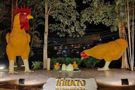

ของดีเมืองยะลา
รสชาติที่เป็นเอกลักษณ์และหาทานได้ยาก

ไก่เบตง (Betong Chicken)
ราชาแห่งไก่ เนื้อแน่น หนังกรอบ ไขมันน้อย เป็นสายพันธุ์พิเศษที่เลี้ยงในเบตงเท่านั้น นิยมทำไก่สับราดซีอิ๊ว

หมี่เบตง (Mee Betong)
เส้นหมี่เหลืองทำมือ เหนียวนุ่ม ผัดแห้งหรือทำเป็นซุปก็อร่อย เป็นภูมิปัญญาชาวจีนกวางไสที่สืบทอดมายาวนาน
ส้มโชกุน (Shogun Orange)
ผลไม้ขึ้นชื่อ รสชาติหวานอมเปรี้ยว กลิ่นหอม เปลือกล่อน ปลูกมากในพื้นที่อำเภอเบตง